| 日付 | 2025年4月29日（火） - 2025年5月2日（金） | ||||||||
|---|---|---|---|---|---|---|---|---|---|
| 山域 | 九州の山 | ||||||||
| メンバー | 単独 | ||||||||
| 山行形態 | 3泊4日避難小屋泊、キャンプ | ||||||||
| アクセス | 電車、飛行機、バス | ||||||||
| ルート (Map1) |
|
3日目
本日も5時に小屋を出発。昨日の石塚小屋と比べると、みな少し行動が遅めだ。
小屋はネズミがいて、夜中に何かをかじっている音がしていた。
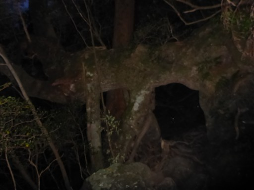
夫婦杉。2つの杉が手をつないでいる。
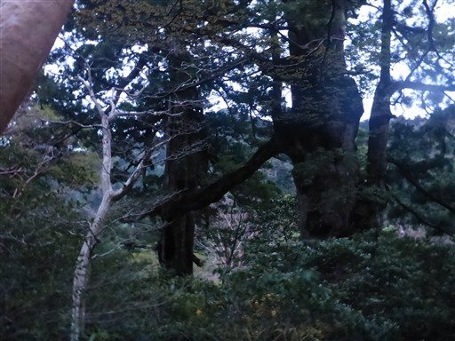
大王杉。まっすぐ伸びる巨木だ。
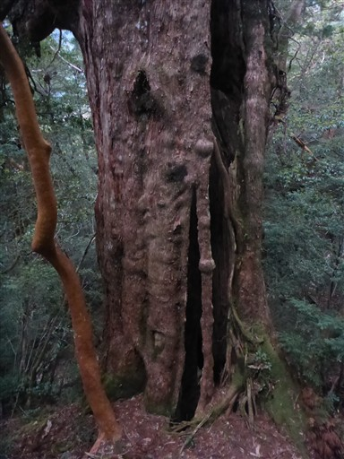
どこもかしこも大木だらけだ。
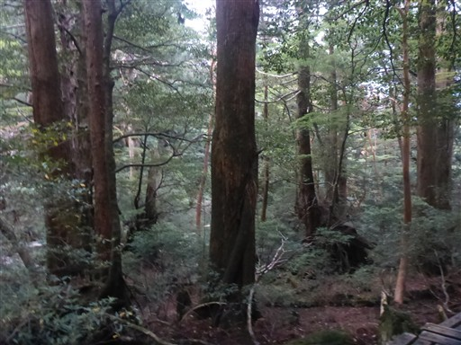
縄文杉までは登山者が多いので、ほぼ完璧に木道が整備されている。
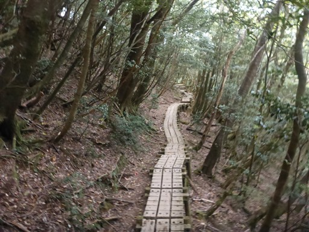
幹の部分がスカートのように広がっている木。
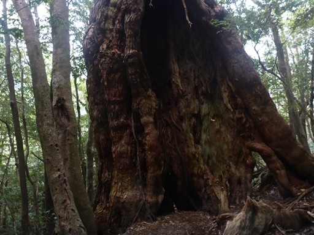
急な階段。ここを登るのは大変そうだ。
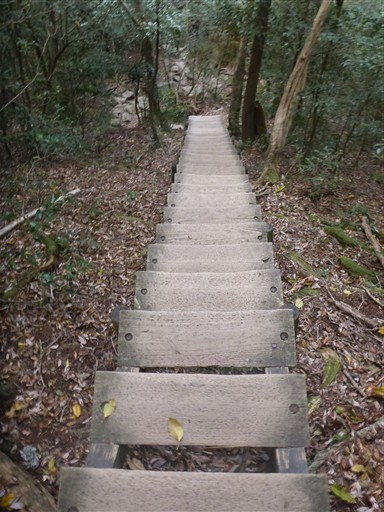
ウィルソン株。
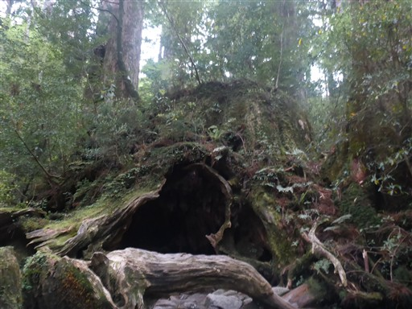
中は空洞になっていて入ることができる。株の中から空を見上げる。
こんな大きな穴のあいた木材が役に立ったのだろうか？
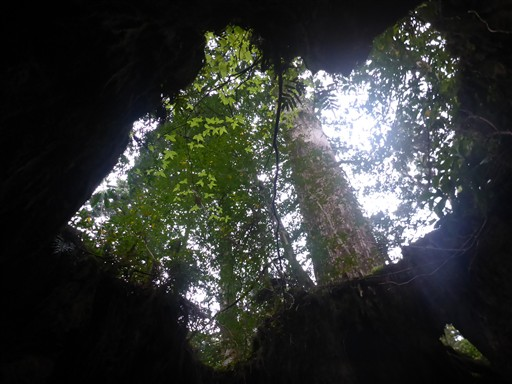
株の中の一角に祠が祀られている。
縄文杉に匹敵する巨木の切り株で、中に入ることで大きさを実感できる。
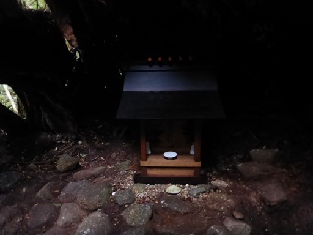
翁杉。2010年に倒木になってしまった。
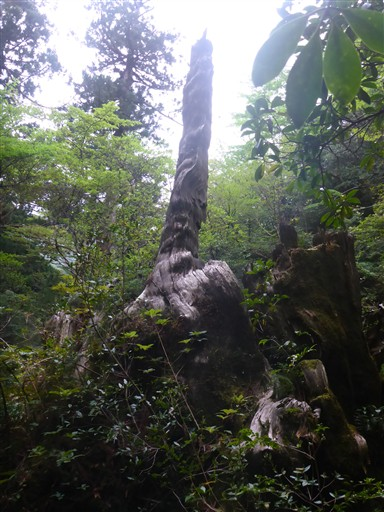
大株歩道入口に下山してくる。ここからはトロッコ軌道を歩く。
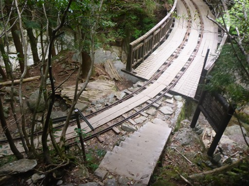
橋を渡った先は行き止まりになっていて小屋が建っている。
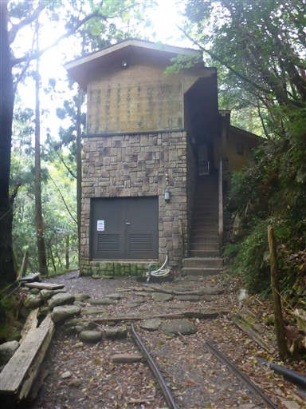
延々と続くトロッコ軌道を歩いていく。線路の中に木道があるので歩きやすい。
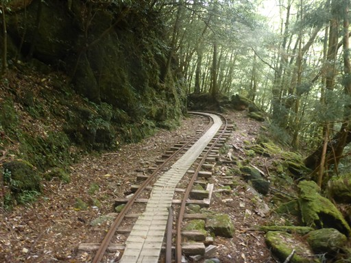
かなり綺麗に整備されているが今でもこのレールは使われているのだろうか？
脱線防止ガードまでついている。
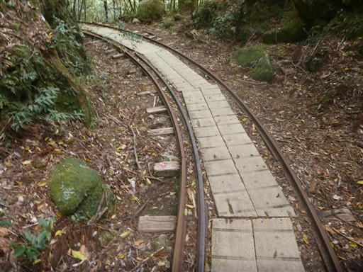
所々で橋を渡る。
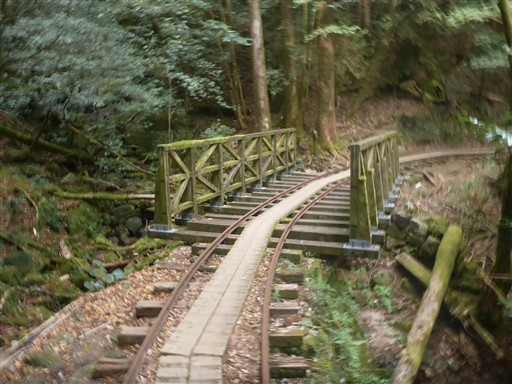
木道以外の部分は下が見えるのでちょっと怖い橋だ。
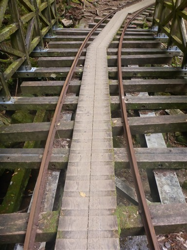
大きな沢を渡る。軌道はぐるっと弧を描いて向こう側の橋で再び沢を渡る。
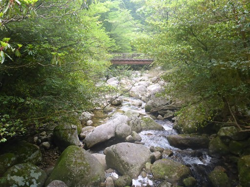
防空壕跡。こんな山の中にも戦争の爪痕が残っている。
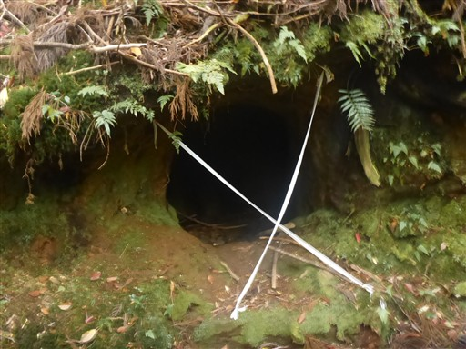
次々と登山者とすれ違うようになってくる。ガイドが率いるグループ登山者も多い。
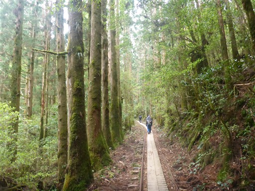
三代杉。一代目の倒木の上に二代目が育ち、
二代目の切り株の上に三代目が育っているらしい。
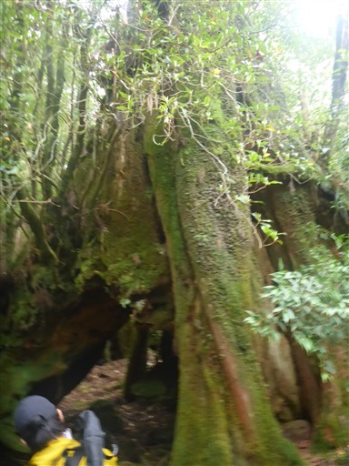
トイレ。もう人がいっぱいで息苦しくなってくる。
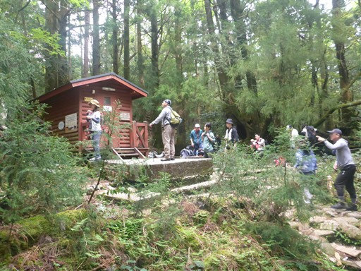
楠川分れに到着。トロッコ軌道の中間地点の辺りだ。
ここから混雑するトロッコ軌道を離れ、白谷雲水峡の方に向かう。
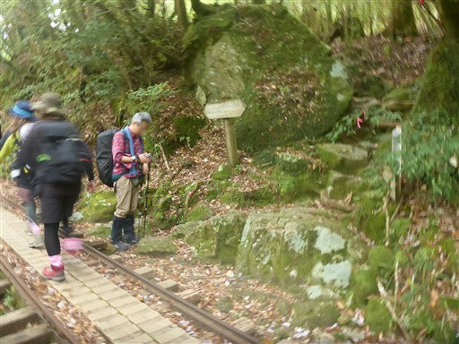
ようやく静かな登山道になる。宿泊したのが高塚小屋でよかった。
新高塚小屋からであればもっと人混みに揉まれていたところだった。
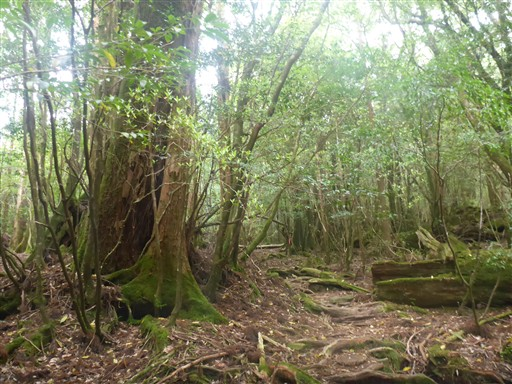
コケに覆われた大きな倒木。
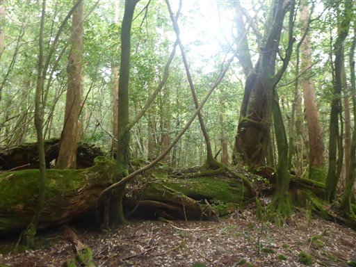
コケに覆われた登山道。この辺りはコケが多い。
トロッコ軌道から太鼓岩までは300mほどの登りだ。
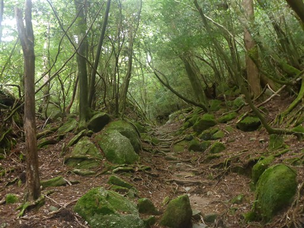
巨大な岩の庇。ここまで登山道に大きくせり出している庇は初めて見た。
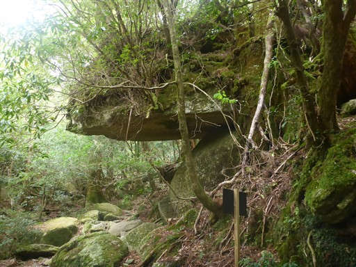
辻峠に到着。ここにザックをデポして太鼓岩を目指す。
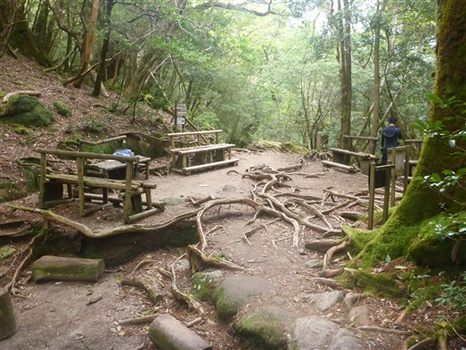
太鼓岩までの道は結構急だ。
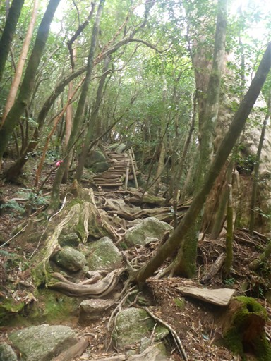
太鼓岩に到着。本日は天気が悪いが、それでも宮之浦岳まで見えている。
広大な斜面に森が広がっている。

眼下の新緑がきれいだ。
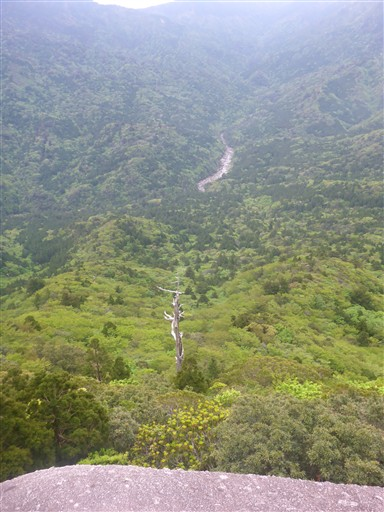
女神杉。解説板に「しなやかな線が美しい女体をイメージできます」と書かれているが
しなやかというか、蛇のように見える。
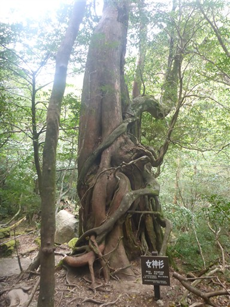
ヤクシカを発見。恐らくこちらに気づいているが、逃げていかない。
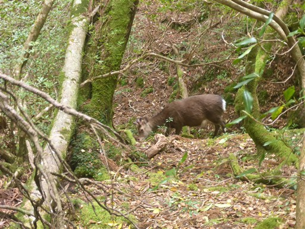
かみなりおんじ。雷に打たれた杉と書かれているが、どの辺を打たれたのだろう？
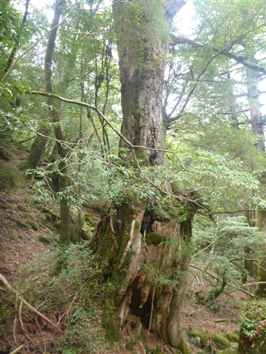
武家杉と公家杉。
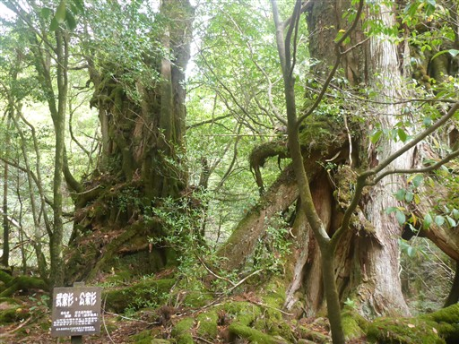
幹の下部が太いのか、岩の上か切り株に生えているのか？
コケでよく見えない。
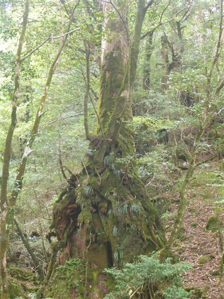
倒木の下を潜る。
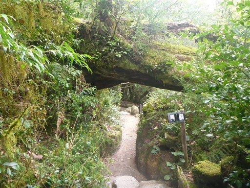
苔むす森。以前は「もののけの森」と呼ばれていたが著作権の問題で変わったとか。
コケや新緑などの緑に包まれた美しい景色だ。
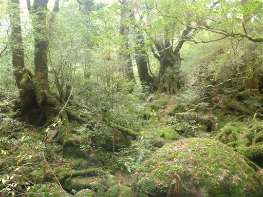
歩きやすい道を降っていく。だんだんとすれ違う登山者の数が増えてくる。
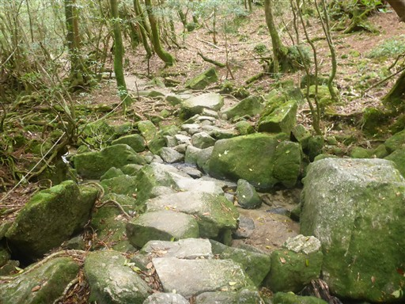
七本杉。
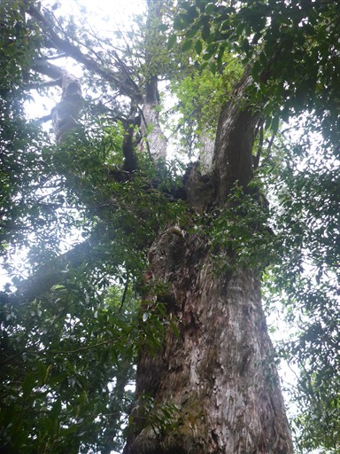
木の幹はコケに覆われている。
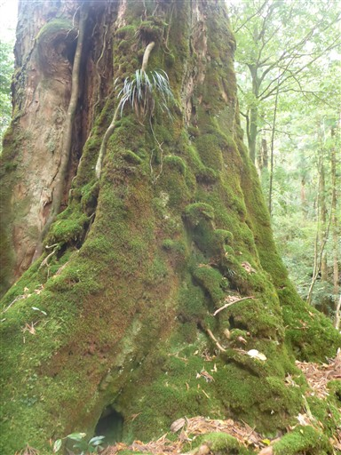
白谷小屋に到着。ここも無人小屋のようだ。
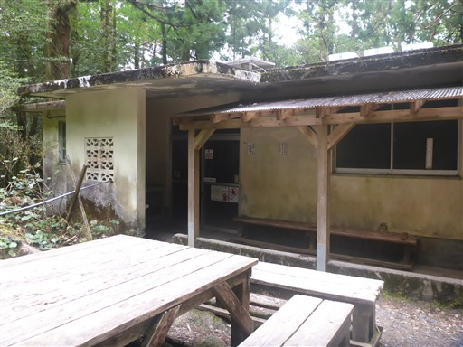
小屋の前にある「シカの宿」と名付けられた切り株。
確かに人間が入るには少し狭い。
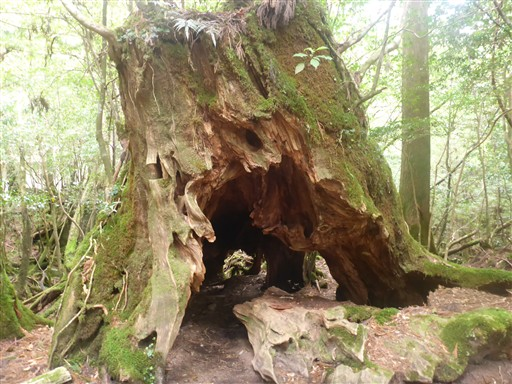
ここから奉行杉コースに行きたかったが、閉鎖されている。
台風などの影響で登山道にいろいろ影響が出ているようだ。
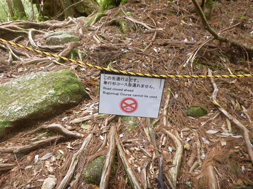
沢の渡渉。最近雨が降っていないので水量は少ない。
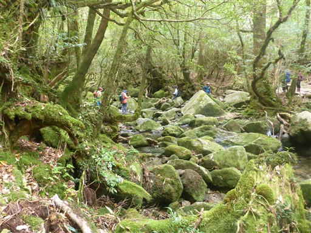
苔むした小沢。下から上まで緑色だ。
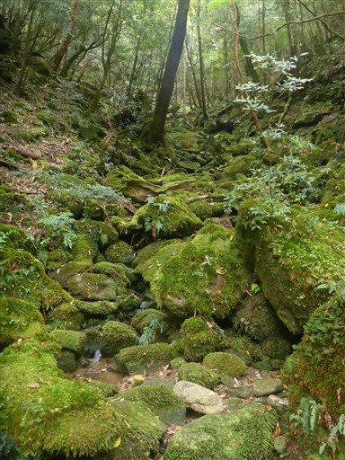
巨大な瘤を持った木。
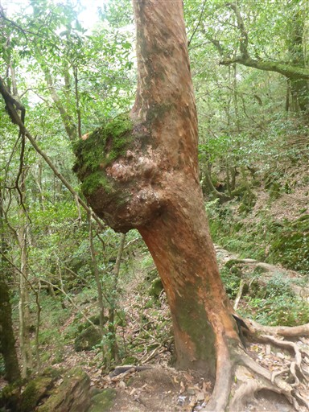
解説板によると、この楠川歩道は切った木を運ぶために作られた道で
300～400年前の石積みの歩道が今も残っているらしい。
確かに非常に歩きやすい道だ。ただ、すれ違いがかなり多くちょっと辛い。
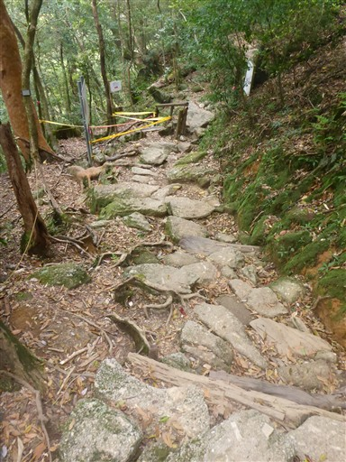
飛竜おとし。細い岩盤の溝を水が勢い良く流れ落ちている。
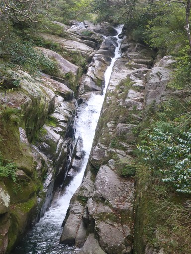
この辺りは美しい渓谷だ。
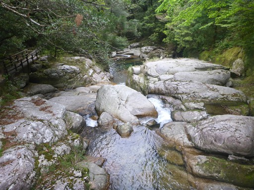
ここからバス停まではすぐなのだが、まだ少し時間に余裕があるため弥生杉コースに行ってみる。
この先の立入禁止はもともと歩く予定だったコースで、向こう側から来るはずだった。
険しい山道かと思ったら、完璧に整備された道だ。
これはサクラツツジ？淡いピンクの花が咲いている。
弥生杉。この杉は残念ながら2024年に倒れてしまった。
推定樹齢3000年だったらしい。
気根杉。右の絡まりあっているものが気根なのだろうか？
雨が降ってきた。

白谷雲水峡の入口に到着。標高610m。
20分ほどでバスがやってくる。
バスで小原町に移動。ここでバスの乗り換え。乗り換えたのは自分一人だけだった。
これから大川の滝に向かう予定。大川の滝に行くバスは1時間半後で、
昼食と温泉をさっと済ませる予定で尾之間バス停で下りたが、
行こうとしていた食事処は本日休業。
仕方なく昼食は諦めて尾之間温泉に向かう。
晴れたら明日行こうと考えているモッチョム岳が僅かに雲に隠れながら聳え立っている。
尾之間温泉。入浴料300円と良心的な値段だ。
源泉そのままのお湯を使っているらしく、ものすごく熱い。
昼食をスキップしたのと、温泉が熱すぎてゆっくりできなかったので、
隣にあるカフェに入ってみる。
時刻は13時半。朝5時から何も食べていない。
ソフトクリームとタンカンジュースを注文。タンカンはこの辺りでとれるミカンの一種だ。
バス停でバスを待っていたら、裏の工務店の人に声をかけられる。
これから栗生に向かうとのことで、中間ガジュマルに送ってくれるとのこと。
いろいろお話をしながら中間集落に移動。
こちらが中間ガジュマル。ガジュマルの巨木が門状に切り開かれている。
無数の気根が地面と繋がっている。こんな木を見るのは初めてだ。
連続テレビ小説まんてんのロケ地にもなったらしい。
親切な方のおかげで、1つ良いものが見れた。
バスの時間まであと少しあるので、バス停前の中間浜に下りてみる。
屋久島に来て初めて間近で見る海だ。
残念ながら曇り空なので、海はあまり青くない。
大川の滝に行くバスに乗って移動。大川の滝に行くバスの本数は非常に少ない。
屋久島を5/6周ほどするこのバスは始発から乗ると2690円もするようだ。
バス停から少し車道を歩く。
大川の滝に到着。落差88m。思った以上に立派な滝だ。
雨量が多いと右側の滝も立派になるのだが、今は水の流れが細い。

滝壺近くまで行くことができる。
ここで食べ残した山の非常食を食べて昼食代わりにする。
数は多くないが、途切れなく観光客がやってくる。
バス停に戻る途中、大雨が降ってくる。
バスで栗生の町まで移動したらSMARTに逃げ込む。
この辺りに夜の営業している飲食店はなさそうだ。
雨宿りをしながら夕飯の総菜や明日の食事を購入する。
雨が小康状態になったら移動開始。屋久島の果てにある栗生の町は過疎化が進んでいるらしい。
本日の宿泊場所、青少年旅行村に移動する。
SMARTから20分ほどで思った以上に遠かった。
広大なキャンプ場。テントはいくつかあるがガラガラだ。
車は意外にも世田谷や横浜ナンバーだ。フェリーで来たのだろうか？
木の下にポツンとテントを張る。
米を水に浸している間、周囲を散策する。
道が4つに分かれている。
展望広場と書かれた真ん中の道を選択。
その先は行き止まりになっているが、全く展望は広がらない。
次いで、右から2つ目の道。海に出る道につながっている。
岩の上を波打ち際まで移動。本日はそこそこ波が高い。
タイドプールがあり、生物を探したりシュノーケリングをするのに良さそうな場所だ。
右から2つ目の道は一番左の道と繋がっていた。
一番右の道も海に繋がっている。山には厚い雲がかかってどんよりとした空模様だ。
キャンプ場に戻ってくる。コテージもあるが、台風の影響で屋根が飛んで修理中のものが多い。
テントに戻って夕飯を食べて就寝。夜中は激しい雨が続き、何度も目が覚めた。
木の下は大きな雨粒が落ちてきてうるさいので失敗だった。